# 核心包
library(tidyverse) # 数据处理
library(naniar) # 缺失值可视化（核心）
library(VIM) # 高级可视化
library(mice) # 多重插补
library(finalfit) # 临床研究报告
# 辅助包
library(visdat) # 数据概览
library(missRanger) # 随机森林插补
theme_set(theme_minimal(base_size = 12))缺失值查看与处理完全指南
实用操作
数据清洗
缺失值
缺失值问题概述
缺失数据是数据分析中最常见的问题之一。正确识别和处理缺失值对于获得可靠的统计推断至关重要。本教程将全面介绍缺失值的检测、可视化和处理方法。
缺失机制分类
| 类型 | 全称 | 含义 | 例子 | 处理难度 |
|---|---|---|---|---|
| MCAR | Missing Completely At Random | 完全随机缺失，与任何变量无关 | 问卷随机丢失 | 易 |
| MAR | Missing At Random | 缺失依赖于其他观测变量 | 高收入人群更不愿报告收入 | 中 |
| MNAR | Missing Not At Random | 缺失依赖于缺失值本身 | 抑郁严重者更可能不填问卷 | 难 |
缺失处理策略总览
| 策略 | 适用场景 | 优点 | 缺点 |
|---|---|---|---|
| 删除法 | MCAR，缺失少 | 简单 | 损失信息，可能有偏 |
| 单值填充 | 快速预览 | 快速 | 低估方差 |
| 多重插补 | MAR | 保留不确定性 | 计算复杂 |
| 最大似然 | MAR | 高效无偏 | 需特定模型 |
R 包安装与加载
创建示例数据
# 创建含多种缺失模式的示例数据
set.seed(2024)
n <- 500
# 基础数据（无缺失）
df_complete <- tibble(
id = 1:n,
age = round(rnorm(n, 55, 12)),
sex = factor(sample(c("男", "女"), n, replace = TRUE)),
education = factor(
sample(c("初中", "高中", "本科", "研究生"), n,
replace = TRUE,
prob = c(0.15, 0.35, 0.35, 0.15)
),
levels = c("初中", "高中", "本科", "研究生")
),
income = round(rnorm(n, 8000, 3000)),
bmi = round(rnorm(n, 24, 4), 1),
blood_pressure = round(rnorm(n, 130, 20)),
cholesterol = round(rnorm(n, 200, 40)),
glucose = round(rnorm(n, 100, 25)),
exercise_hours = round(rpois(n, 3)),
smoking = factor(sample(c("从不", "已戒", "吸烟"), n,
replace = TRUE,
prob = c(0.5, 0.2, 0.3)
)),
disease_score = round(50 + 0.3 * (age - 55) + 5 * (bmi - 24) + rnorm(n, 0, 10))
)
# 引入不同类型的缺失
df <- df_complete %>%
mutate(
# MCAR: 完全随机缺失（年龄，约10%）
age = ifelse(runif(n) < 0.10, NA, age),
# MAR: 依赖其他变量（收入缺失与教育水平相关 - 教育低的更不愿报告）
income = ifelse(
as.numeric(education) <= 2 & runif(n) < 0.25, # 初中/高中25%缺失
NA,
ifelse(runif(n) < 0.05, NA, income) # 其他5%缺失
),
# MAR: 胆固醇缺失与年龄相关
cholesterol = ifelse(age > 60 | runif(n) < 0.15,
ifelse(runif(n) < 0.3, NA, cholesterol),
cholesterol
),
# 血糖：与BMI相关的缺失
glucose = ifelse(bmi > 28 & runif(n) < 0.2, NA,
ifelse(runif(n) < 0.08, NA, glucose)
),
# 教育：少量随机缺失
education = ifelse(runif(n) < 0.05, NA, as.character(education)),
education = factor(education, levels = c("初中", "高中", "本科", "研究生")),
# 吸烟状态：极少缺失
smoking = ifelse(runif(n) < 0.03, NA, as.character(smoking)),
smoking = factor(smoking, levels = c("从不", "已戒", "吸烟"))
)
# 查看数据
glimpse(df)Rows: 500
Columns: 12
$ id <int> 1, 2, 3, 4, 5, 6, 7, 8, 9, 10, 11, 12, 13, 14, 15, 16, …
$ age <dbl> 67, 61, 54, 52, 69, 71, 61, 53, 40, 42, 35, 61, 65, NA,…
$ sex <fct> 女, 女, 男, 女, 女, 男, 男, 男, 女, 女, 女, 女, 女, 女, 男, 男, 男, 男, 女…
$ education <fct> 本科, 高中, 研究生, 本科, 初中, 初中, 本科, 高中, 初中, 本科, 高中, 高中, 本科, 高中…
$ income <dbl> 7845, 6502, 5292, 6884, 7435, 5790, 5371, 3805, 9184, 6…
$ bmi <dbl> 34.2, 23.3, 26.9, 19.8, 22.8, 24.1, 28.9, 23.0, 30.8, 2…
$ blood_pressure <dbl> 150, 104, 118, 83, 122, 89, 150, 152, 104, 111, 104, 11…
$ cholesterol <dbl> 121, 232, NA, 212, NA, 177, 247, 187, 138, 238, 171, 17…
$ glucose <dbl> NA, 107, 113, 96, 104, 122, NA, 57, 100, 108, 80, NA, 1…
$ exercise_hours <dbl> 4, 2, 0, 1, 3, 5, 7, 7, 2, 4, 5, 3, 3, 1, 5, 4, 0, 4, 3…
$ smoking <fct> 已戒, 从不, 从不, 从不, 从不, 已戒, 已戒, 从不, 吸烟, 从不, 吸烟, 已戒, 从不, 吸烟,…
$ disease_score <dbl> 115, 42, 50, 4, 55, 62, 88, 53, 90, 71, 48, 73, 40, 45,…第一部分：缺失值检测
基础统计
# 总体缺失情况
cat("===== 缺失值基础统计 =====\n")===== 缺失值基础统计 =====cat("总缺失数:", sum(is.na(df)), "\n")总缺失数: 301 cat("总缺失率:", round(mean(is.na(df)) * 100, 2), "%\n\n")总缺失率: 5.02 %# 每列缺失数和比例
missing_summary <- data.frame(
变量 = names(df),
缺失数 = sapply(df, function(x) sum(is.na(x))),
缺失率 = sapply(df, function(x) round(mean(is.na(x)) * 100, 2))
)
missing_summary %>%
filter(缺失数 > 0) %>%
arrange(desc(缺失率)) 变量 缺失数 缺失率
cholesterol cholesterol 90 18.0
income income 80 16.0
glucose glucose 66 13.2
age age 36 7.2
education education 18 3.6
smoking smoking 11 2.2使用 naniar 包
naniar 包提供了 tidyverse 风格的缺失值处理函数。
# 变量级别的缺失摘要
miss_var_summary(df)# A tibble: 12 × 3
variable n_miss pct_miss
<chr> <int> <num>
1 cholesterol 90 18
2 income 80 16
3 glucose 66 13.2
4 age 36 7.2
5 education 18 3.6
6 smoking 11 2.2
7 id 0 0
8 sex 0 0
9 bmi 0 0
10 blood_pressure 0 0
11 exercise_hours 0 0
12 disease_score 0 0 # 样本级别的缺失摘要
miss_case_summary(df) %>%
head(10)# A tibble: 10 × 3
case n_miss pct_miss
<int> <int> <dbl>
1 136 4 33.3
2 346 4 33.3
3 413 4 33.3
4 41 3 25
5 68 3 25
6 83 3 25
7 111 3 25
8 122 3 25
9 172 3 25
10 218 3 25 # 缺失表格（按缺失变量数分组）
miss_case_table(df)# A tibble: 5 × 3
n_miss_in_case n_cases pct_cases
<int> <int> <dbl>
1 0 280 56
2 1 156 31.2
3 2 50 10
4 3 11 2.2
5 4 3 0.6使用 finalfit 包
finalfit 包特别适合临床研究报告。
# 缺失模式摘要
ff_glimpse(df)$Continuous
label var_type n missing_n missing_percent mean
id id <int> 500 0 0.0 250.5
age age <dbl> 464 36 7.2 55.7
income income <dbl> 420 80 16.0 8126.0
bmi bmi <dbl> 500 0 0.0 24.0
blood_pressure blood_pressure <dbl> 500 0 0.0 130.7
cholesterol cholesterol <dbl> 410 90 18.0 199.1
glucose glucose <dbl> 434 66 13.2 99.2
exercise_hours exercise_hours <dbl> 500 0 0.0 3.0
disease_score disease_score <dbl> 500 0 0.0 50.2
sd min quartile_25 median quartile_75 max
id 144.5 1.0 125.8 250.5 375.2 500.0
age 11.6 16.0 48.0 56.0 64.0 90.0
income 2872.1 438.0 6310.5 7830.5 9930.8 15544.0
bmi 3.9 12.2 21.4 24.1 26.8 35.0
blood_pressure 19.2 70.0 118.0 132.0 144.0 190.0
cholesterol 41.0 78.0 170.0 199.0 229.8 300.0
glucose 25.3 16.0 81.0 99.0 116.0 171.0
exercise_hours 1.8 0.0 2.0 3.0 4.0 10.0
disease_score 22.2 -21.0 36.0 50.0 64.2 115.0
$Categorical
label var_type n missing_n missing_percent levels_n
sex sex <fct> 500 0 0.0 2
education education <fct> 482 18 3.6 4
smoking smoking <fct> 489 11 2.2 3
levels levels_count
sex "男", "女", "(Missing)" 255, 245
education "初中", "高中", "本科", "研究生", "(Missing)" 76, 166, 176, 64, 18
smoking "从不", "已戒", "吸烟", "(Missing)" 238, 96, 155, 11
levels_percent
sex 51, 49
education 15.2, 33.2, 35.2, 12.8, 3.6
smoking 47.6, 19.2, 31.0, 2.2# 与结局变量关联的缺失分析
explanatory <- c("age", "sex", "education", "income", "bmi", "cholesterol")
dependent <- "disease_score"
df %>%
missing_pattern(dependent, explanatory)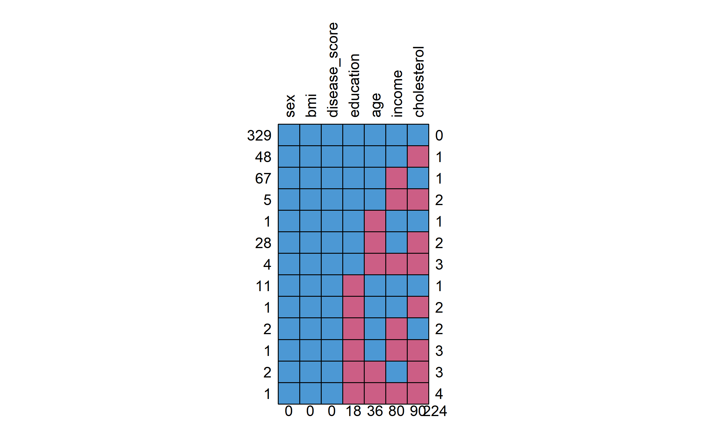
sex bmi disease_score education age income cholesterol
329 1 1 1 1 1 1 1 0
48 1 1 1 1 1 1 0 1
67 1 1 1 1 1 0 1 1
5 1 1 1 1 1 0 0 2
1 1 1 1 1 0 1 1 1
28 1 1 1 1 0 1 0 2
4 1 1 1 1 0 0 0 3
11 1 1 1 0 1 1 1 1
1 1 1 1 0 1 1 0 2
2 1 1 1 0 1 0 1 2
1 1 1 1 0 1 0 0 3
2 1 1 1 0 0 1 0 3
1 1 1 1 0 0 0 0 4
0 0 0 18 36 80 90 224第二部分：缺失值可视化
可视化是理解缺失模式的关键步骤。
热图可视化
# 使用 naniar
vis_miss(df, sort_miss = TRUE) +
labs(
title = "缺失值热图",
subtitle = "黑色表示缺失，按缺失率排序"
)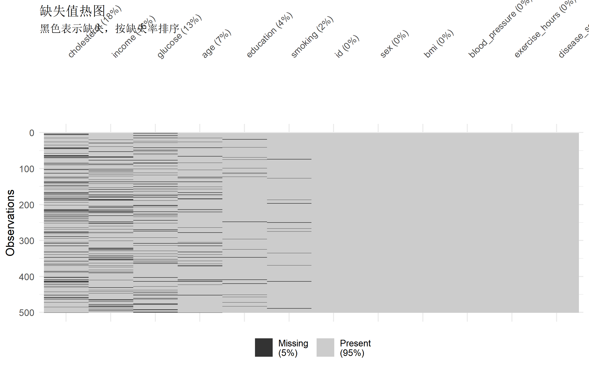
数据类型与缺失概览
# 使用 visdat
vis_dat(df) +
labs(title = "数据类型与缺失值概览")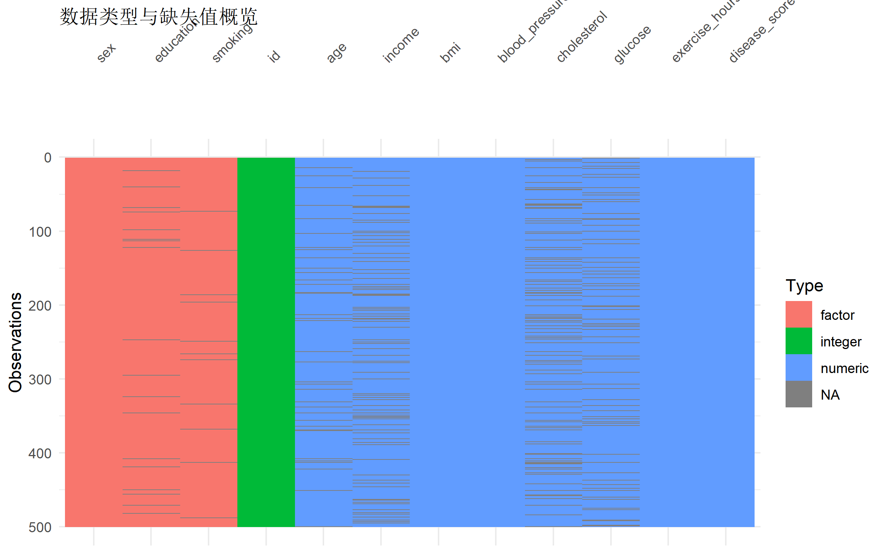
UpSet 图：缺失模式组合
# 显示变量缺失的组合模式
gg_miss_upset(df, nsets = 6) +
labs(title = "缺失模式 UpSet 图")NULL解读: UpSet 图显示不同变量缺失的组合。例如，某些样本可能同时缺失收入和胆固醇。
变量间缺失关联
# 缺失值的相关性
gg_miss_fct(df, fct = sex) +
labs(title = "缺失率与性别的关系")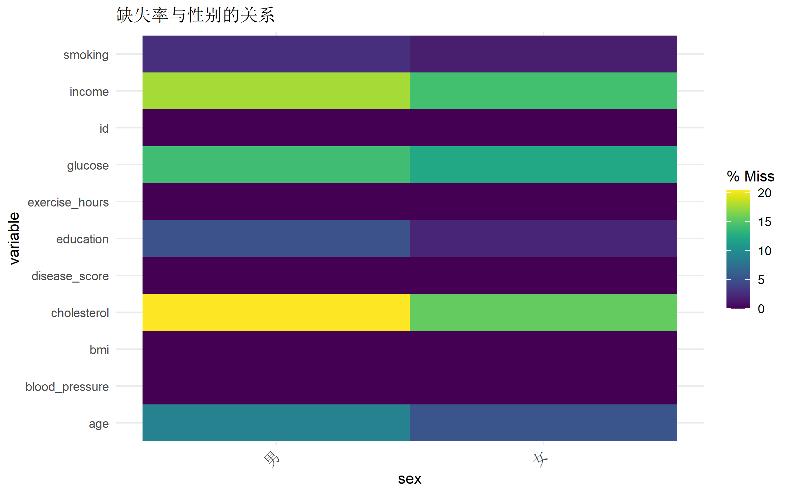
# 按教育水平查看缺失
gg_miss_fct(df %>% filter(!is.na(education)), fct = education) +
labs(title = "缺失率与教育水平的关系")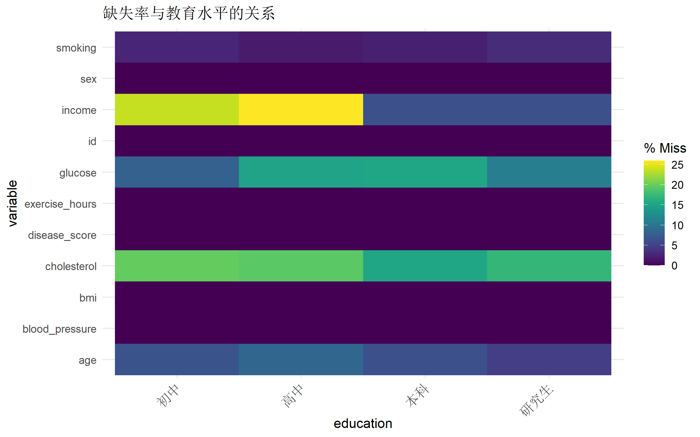
VIM 包高级可视化
# 聚合图：展示变量组合的缺失模式
aggr_plot <- aggr(df,
col = c("#4f46e5", "#ef4444"),
numbers = TRUE,
sortVars = TRUE,
labels = names(df),
cex.axis = 0.7,
gap = 3,
ylab = c("缺失比例", "缺失模式")
)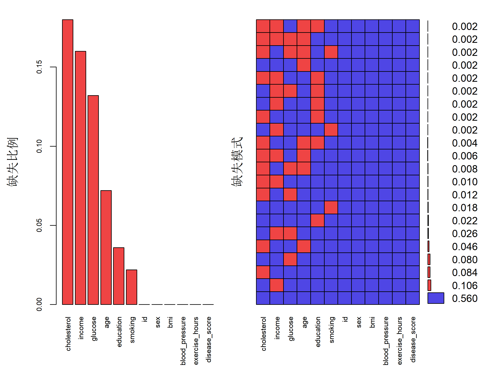
Variables sorted by number of missings:
Variable Count
cholesterol 0.180
income 0.160
glucose 0.132
age 0.072
education 0.036
smoking 0.022
id 0.000
sex 0.000
bmi 0.000
blood_pressure 0.000
exercise_hours 0.000
disease_score 0.000# 边际图：展示两个变量的缺失关系
marginplot(df[c("income", "cholesterol")],
col = c("#4f46e5", "#ef4444", "#22c55e"),
main = "收入与胆固醇的缺失边际图"
)
解读: 边际图中，红色点表示一个变量缺失时另一个变量的分布。如果分布与蓝色（完整数据）明显不同，说明缺失可能不是 MCAR。
矩阵图
# 矩阵图：变量对之间的缺失关系
matrixplot(df, sortby = "income")
第三部分：缺失机制检验
Little’s MCAR 检验
# 使用 naniar 的 mcar_test
mcar_result <- mcar_test(df %>% select(where(is.numeric)))
print(mcar_result)# A tibble: 1 × 4
statistic df p.value missing.patterns
<dbl> <dbl> <dbl> <int>
1 105. 77 0.0192 12# 解读
if (mcar_result$p.value < 0.05) {
cat("\np < 0.05: 拒绝 MCAR 假设，缺失可能是 MAR 或 MNAR\n")
} else {
cat("\np >= 0.05: 不能拒绝 MCAR 假设\n")
}
p < 0.05: 拒绝 MCAR 假设，缺失可能是 MAR 或 MNAR缺失指示变量分析
# 创建缺失指示变量，检验缺失与其他变量的关联
df_shadow <- bind_shadow(df)
# 检验收入缺失是否与教育相关
chisq.test(table(df$education, is.na(df$income)))
Pearson's Chi-squared test
data: table(df$education, is.na(df$income))
X-squared = 32.796, df = 3, p-value = 3.556e-07# 可视化缺失与其他变量的关系
df_shadow %>%
filter(!is.na(education)) %>%
ggplot(aes(x = education, fill = income_NA)) +
geom_bar(position = "fill") +
scale_fill_manual(
values = c("#4f46e5", "#ef4444"),
labels = c("有数据", "缺失")
) +
labs(
title = "收入缺失与教育水平的关系",
y = "比例",
fill = "收入状态"
) +
theme(legend.position = "top")
第四部分：简单处理方法
删除法
# 完整案例分析（listwise deletion）
df_complete_cases <- df %>%
drop_na()
cat("原始样本量:", nrow(df), "\n")原始样本量: 500 cat("完整案例样本量:", nrow(df_complete_cases), "\n")完整案例样本量: 280 cat("损失比例:", round((1 - nrow(df_complete_cases) / nrow(df)) * 100, 1), "%\n")损失比例: 44 %# 只删除关键变量的缺失
df_partial_drop <- df %>%
drop_na(age, disease_score)
cat("删除关键变量缺失后样本量:", nrow(df_partial_drop), "\n")删除关键变量缺失后样本量: 464 警告: 删除法仅在 MCAR 时无偏，且会损失大量信息。
单值填充
# 均值/中位数填充
df_mean_imputed <- df %>%
mutate(
age = replace_na(age, round(mean(age, na.rm = TRUE))),
income = replace_na(income, round(median(income, na.rm = TRUE))),
cholesterol = replace_na(cholesterol, round(mean(cholesterol, na.rm = TRUE))),
glucose = replace_na(glucose, round(mean(glucose, na.rm = TRUE)))
)
# 检查结果
sum(is.na(df_mean_imputed %>% select(age, income, cholesterol, glucose)))[1] 0# 使用 tidyr::replace_na
df_filled <- df %>%
mutate(
bmi = replace_na(bmi, median(bmi, na.rm = TRUE))
)众数填充（分类变量）
# 定义众数函数
get_mode <- function(x) {
x <- x[!is.na(x)]
ux <- unique(x)
ux[which.max(tabulate(match(x, ux)))]
}
# 填充分类变量
df_mode_filled <- df %>%
mutate(
education = replace_na(education, get_mode(education)),
smoking = replace_na(smoking, get_mode(smoking))
)分组填充
# 按性别分组填充年龄
df_group_filled <- df %>%
group_by(sex) %>%
mutate(
age = replace_na(age, round(mean(age, na.rm = TRUE)))
) %>%
ungroup()第五部分：多重插补 (mice)
多重插补是处理 MAR 缺失的推荐方法，它通过生成多个插补数据集来保留估计的不确定性。
基本流程
# 准备数据（只保留需要分析的变量）
df_mice <- df %>%
select(
age, sex, education, income, bmi, cholesterol, glucose,
exercise_hours, smoking, disease_score
)
# 执行多重插补
imp <- mice(
df_mice,
m = 5, # 生成5个插补数据集
method = "pmm", # 默认方法：预测均值匹配
maxit = 10, # 迭代次数
seed = 42,
print = FALSE
)
# 查看插补模型摘要
impClass: mids
Number of multiple imputations: 5
Imputation methods:
age sex education income bmi
"pmm" "" "pmm" "pmm" ""
cholesterol glucose exercise_hours smoking disease_score
"pmm" "pmm" "" "pmm" ""
PredictorMatrix:
age sex education income bmi cholesterol glucose exercise_hours
age 0 1 1 1 1 1 1 1
sex 1 0 1 1 1 1 1 1
education 1 1 0 1 1 1 1 1
income 1 1 1 0 1 1 1 1
bmi 1 1 1 1 0 1 1 1
cholesterol 1 1 1 1 1 0 1 1
smoking disease_score
age 1 1
sex 1 1
education 1 1
income 1 1
bmi 1 1
cholesterol 1 1插补方法选择
| 方法 | 代码 | 适用类型 | 说明 |
|---|---|---|---|
| 预测均值匹配 | pmm |
数值型 | 默认，保持原始分布 |
| 贝叶斯线性回归 | norm |
连续数值 | 正态分布假设 |
| 逻辑回归 | logreg |
二分类 | 0/1 变量 |
| 多项式回归 | polyreg |
多分类 | 有序/无序分类 |
| 随机森林 | rf |
通用 | 复杂关系 |
# 查看使用的插补方法
imp$method age sex education income bmi
"pmm" "" "pmm" "pmm" ""
cholesterol glucose exercise_hours smoking disease_score
"pmm" "pmm" "" "pmm" "" # 自定义插补方法
method_custom <- make.method(df_mice)
method_custom["education"] <- "polyreg" # 多分类用多项式
method_custom["smoking"] <- "polyreg"
# 重新插补
imp_custom <- mice(df_mice,
m = 5, method = method_custom,
seed = 42, print = FALSE
)
imp_custom$method age sex education income bmi
"pmm" "" "polyreg" "pmm" ""
cholesterol glucose exercise_hours smoking disease_score
"pmm" "pmm" "" "polyreg" "" 诊断：检查收敛性
# 查看迭代轨迹（应该稳定收敛）
plot(imp, c("age", "income", "cholesterol"))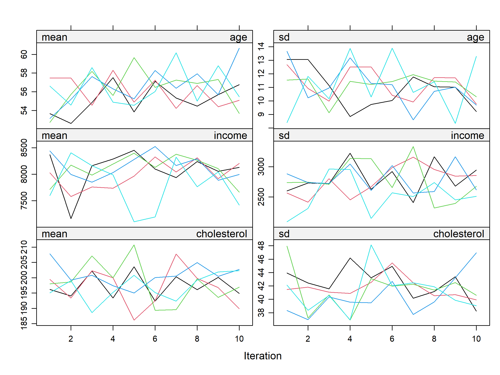
诊断：比较插补前后分布
# 密度图比较
densityplot(imp, ~ age + income + cholesterol)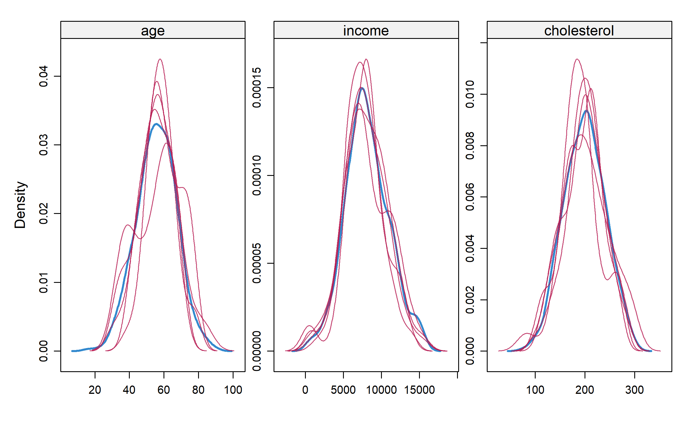
# 条带图
stripplot(imp, age + income ~ .imp, pch = 20, cex = 0.8)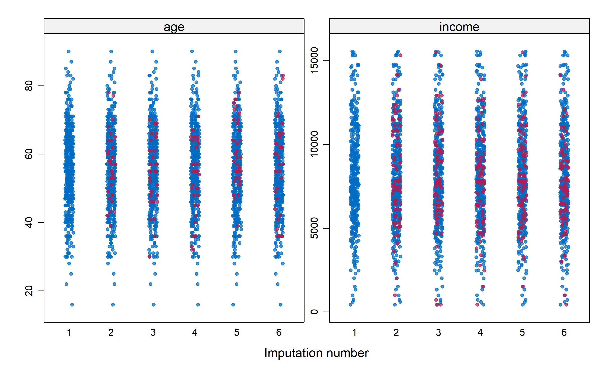
解读: 蓝色点是观测值，红色点是插补值。如果分布合理重叠，说明插补质量好。
提取插补数据
# 提取第1个插补数据集
complete_1 <- complete(imp, 1)
head(complete_1) age sex education income bmi cholesterol glucose exercise_hours smoking
1 67 女 本科 7845 34.2 121 66 4 已戒
2 61 女 高中 6502 23.3 232 107 2 从不
3 54 男 研究生 5292 26.9 178 113 0 从不
4 52 女 本科 6884 19.8 212 96 1 从不
5 69 女 初中 7435 22.8 180 104 3 从不
6 71 男 初中 5790 24.1 177 122 5 已戒
disease_score
1 115
2 42
3 50
4 4
5 55
6 62# 提取所有插补数据（长格式）
complete_long <- complete(imp, action = "long", include = TRUE)
head(complete_long) age sex education income bmi cholesterol glucose exercise_hours smoking
1 67 女 本科 7845 34.2 121 NA 4 已戒
2 61 女 高中 6502 23.3 232 107 2 从不
3 54 男 研究生 5292 26.9 NA 113 0 从不
4 52 女 本科 6884 19.8 212 96 1 从不
5 69 女 初中 7435 22.8 NA 104 3 从不
6 71 男 初中 5790 24.1 177 122 5 已戒
disease_score .imp .id
1 115 0 1
2 42 0 2
3 50 0 3
4 4 0 4
5 55 0 5
6 62 0 6对多重插补数据建模
# 在每个插补数据集上拟合模型
fit <- with(imp, lm(disease_score ~ age + sex + education + income + bmi + cholesterol))
# 查看各数据集的结果
summary(fit)# A tibble: 45 × 7
term estimate std.error statistic p.value nobs df.residual
<chr> <dbl> <dbl> <dbl> <dbl> <int> <dbl>
1 (Intercept) -88.8 4.42 -20.1 6.84e- 66 500 491
2 age 0.325 0.0380 8.55 1.56e- 16 500 491
3 sex女 0.110 0.874 0.126 9.00e- 1 500 491
4 education高中 -0.417 1.33 -0.314 7.54e- 1 500 491
5 education本科 0.642 1.31 0.489 6.25e- 1 500 491
6 education研究生 -0.436 1.61 -0.271 7.87e- 1 500 491
7 income 0.0000859 0.000152 0.567 5.71e- 1 500 491
8 bmi 5.04 0.111 45.3 1.39e-177 500 491
9 cholesterol -0.00579 0.0108 -0.538 5.91e- 1 500 491
10 (Intercept) -87.3 4.55 -19.2 1.26e- 61 500 491
# ℹ 35 more rows# 使用 Rubin 规则合并结果
pooled <- pool(fit)
summary(pooled) term estimate std.error statistic df
1 (Intercept) -8.711482e+01 4.6396675465 -18.77609113 289.11817
2 age 3.166707e-01 0.0385649516 8.21135891 397.69676
3 sex女 7.586828e-02 0.8792622419 0.08628629 481.75735
4 education高中 -2.728449e-01 1.3677285572 -0.19948763 365.81528
5 education本科 4.447314e-01 1.3452444928 0.33059520 406.03454
6 education研究生 -3.386356e-01 1.7137413023 -0.19760020 210.22579
7 income 9.915020e-05 0.0001622097 0.61124699 203.73630
8 bmi 5.033286e+00 0.1131169347 44.49630520 433.33042
9 cholesterol -1.143134e-02 0.0119734350 -0.95472509 79.13605
p.value
1 5.613713e-52
2 3.091819e-15
3 9.312747e-01
4 8.419922e-01
5 7.411208e-01
6 8.435488e-01
7 5.417175e-01
8 1.098290e-163
9 3.426241e-01# 更完整的汇总表
pool_summary <- summary(pooled) %>%
mutate(
`95% CI` = paste0(
"[", round(estimate - 1.96 * std.error, 3), ", ",
round(estimate + 1.96 * std.error, 3), "]"
),
p.value = format.pval(p.value, digits = 3)
) %>%
select(term, estimate, std.error, `95% CI`, p.value)
pool_summary term estimate std.error 95% CI p.value
1 (Intercept) -8.711482e+01 4.6396675465 [-96.209, -78.021] < 2e-16
2 age 3.166707e-01 0.0385649516 [0.241, 0.392] 3.09e-15
3 sex女 7.586828e-02 0.8792622419 [-1.647, 1.799] 0.931
4 education高中 -2.728449e-01 1.3677285572 [-2.954, 2.408] 0.842
5 education本科 4.447314e-01 1.3452444928 [-2.192, 3.081] 0.741
6 education研究生 -3.386356e-01 1.7137413023 [-3.698, 3.02] 0.844
7 income 9.915020e-05 0.0001622097 [0, 0] 0.542
8 bmi 5.033286e+00 0.1131169347 [4.812, 5.255] < 2e-16
9 cholesterol -1.143134e-02 0.0119734350 [-0.035, 0.012] 0.343第六部分：高级插补方法
随机森林插补 (missRanger)
missRanger 使用随机森林进行插补，适合复杂非线性关系。
# 随机森林插补
df_rf_imputed <- missRanger(
df_mice,
num.trees = 100,
verbose = 0,
seed = 42
)
# 检查结果
sum(is.na(df_rf_imputed))[1] 0# 比较原始数据和插补数据的分布
compare_dist <- tibble(
variable = "income",
original = df_mice$income,
imputed = df_rf_imputed$income
) %>%
pivot_longer(-variable, names_to = "type", values_to = "value") %>%
filter(!is.na(value))
ggplot(compare_dist, aes(x = value, fill = type)) +
geom_density(alpha = 0.5) +
scale_fill_manual(
values = c("#4f46e5", "#22c55e"),
labels = c("插补后", "原始")
) +
labs(
title = "收入分布：原始 vs 随机森林插补",
x = "收入", y = "密度", fill = ""
)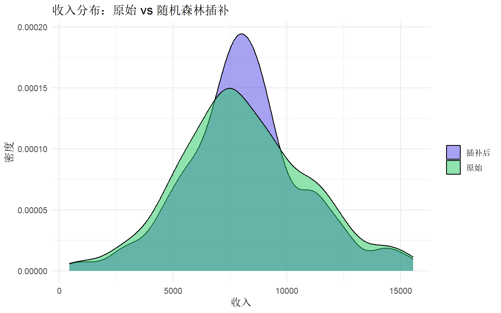
K最近邻插补 (VIM)
# KNN 插补
df_knn_imputed <- kNN(df_mice, k = 5) income bmi cholesterol glucose exercise_hours
438.0 12.2 78.0 16.0 0.0
disease_score income bmi cholesterol glucose
-21.0 15544.0 35.0 300.0 171.0
exercise_hours disease_score
10.0 115.0
age income bmi cholesterol glucose
16.0 438.0 12.2 78.0 16.0
exercise_hours disease_score age income bmi
0.0 -21.0 90.0 15544.0 35.0
cholesterol glucose exercise_hours disease_score
300.0 171.0 10.0 115.0
age bmi cholesterol glucose exercise_hours
16.0 12.2 78.0 16.0 0.0
disease_score age bmi cholesterol glucose
-21.0 90.0 35.0 300.0 171.0
exercise_hours disease_score
10.0 115.0
age income bmi glucose exercise_hours
16.0 438.0 12.2 16.0 0.0
disease_score age income bmi glucose
-21.0 90.0 15544.0 35.0 171.0
exercise_hours disease_score
10.0 115.0
age income bmi cholesterol exercise_hours
16.0 438.0 12.2 78.0 0.0
disease_score age income bmi cholesterol
-21.0 90.0 15544.0 35.0 300.0
exercise_hours disease_score
10.0 115.0
age income bmi cholesterol glucose
16.0 438.0 12.2 78.0 16.0
exercise_hours disease_score age income bmi
0.0 -21.0 90.0 15544.0 35.0
cholesterol glucose exercise_hours disease_score
300.0 171.0 10.0 115.0 # kNN 会添加指示变量，需要移除
df_knn_imputed <- df_knn_imputed %>%
select(-ends_with("_imp"))第七部分：敏感性分析
由于无法直接验证 MAR 假设，敏感性分析非常重要。
Tipping Point 分析
# 模拟 MNAR 场景：假设缺失的收入实际上偏低
delta_values <- c(0, -1000, -2000, -3000) # 偏移量
sensitivity_results <- map_dfr(delta_values, function(delta) {
# 对第一个插补数据集进行敏感性调整
imp_adj <- complete(imp, 1)
# 找出原始缺失的位置
missing_idx <- is.na(df_mice$income)
# 对插补值进行偏移
imp_adj$income[missing_idx] <- imp_adj$income[missing_idx] + delta
# 拟合模型
fit <- lm(disease_score ~ age + income + bmi, data = imp_adj)
# 返回收入系数
tibble(
delta = delta,
estimate = coef(fit)["income"],
se = summary(fit)$coefficients["income", "Std. Error"],
p.value = summary(fit)$coefficients["income", "Pr(>|t|)"]
)
})
sensitivity_results# A tibble: 4 × 4
delta estimate se p.value
<dbl> <dbl> <dbl> <dbl>
1 0 0.0000784 0.000150 0.603
2 -1000 0.0000974 0.000149 0.514
3 -2000 0.000112 0.000146 0.441
4 -3000 0.000122 0.000140 0.384# 可视化敏感性分析
ggplot(sensitivity_results, aes(x = delta, y = estimate)) +
geom_line(color = "#4f46e5", linewidth = 1) +
geom_point(size = 3, color = "#4f46e5") +
geom_errorbar(
aes(
ymin = estimate - 1.96 * se,
ymax = estimate + 1.96 * se
),
width = 100, color = "#4f46e5"
) +
geom_hline(yintercept = 0, linetype = "dashed", color = "red") +
labs(
title = "敏感性分析：收入效应随 MNAR 偏移的变化",
x = "假设的 MNAR 偏移量 (元)",
y = "收入系数估计"
) +
theme(plot.title = element_text(face = "bold"))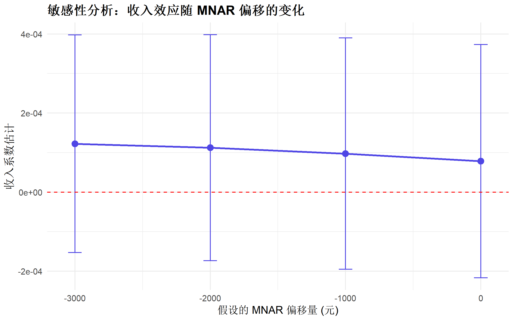
第八部分：完整分析流程
实战案例
# ========== 完整缺失值分析流程 ==========
# 1. 缺失概览
cat("===== Step 1: 缺失值概览 =====\n")===== Step 1: 缺失值概览 =====miss_var_summary(df_mice)# A tibble: 10 × 3
variable n_miss pct_miss
<chr> <int> <num>
1 cholesterol 90 18
2 income 80 16
3 glucose 66 13.2
4 age 36 7.2
5 education 18 3.6
6 smoking 11 2.2
7 sex 0 0
8 bmi 0 0
9 exercise_hours 0 0
10 disease_score 0 0 # 2. 可视化缺失模式
vis_miss(df_mice, sort_miss = TRUE) +
labs(title = "Step 2: 缺失热图")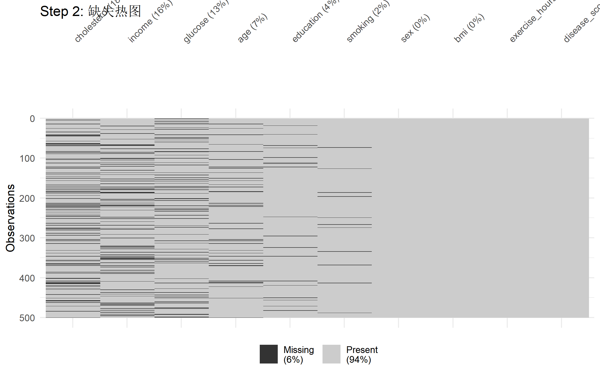
# 3. MCAR 检验
cat("\n===== Step 3: MCAR 检验 =====\n")
===== Step 3: MCAR 检验 =====mcar_test(df_mice %>% select(where(is.numeric)))# A tibble: 1 × 4
statistic df p.value missing.patterns
<dbl> <dbl> <dbl> <int>
1 85.8 55 0.00491 12# 4. 多重插补
cat("\n===== Step 4: 多重插补 =====\n")
===== Step 4: 多重插补 =====imp_final <- mice(df_mice,
m = 10, method = "pmm",
maxit = 20, seed = 2024, print = FALSE
)# 5. 诊断
densityplot(imp_final, ~ age + income)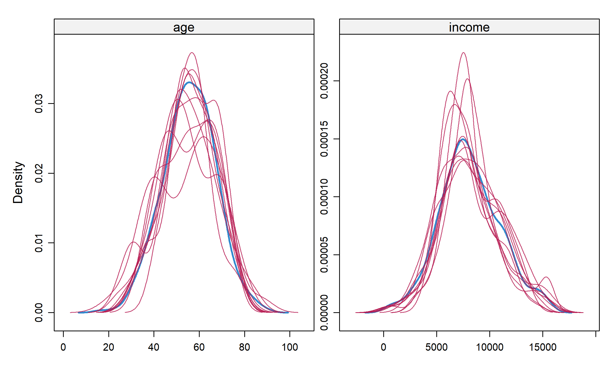
# 6. 建模与合并
fit_final <- with(
imp_final,
lm(disease_score ~ age + sex + income + bmi + cholesterol)
)
pooled_final <- pool(fit_final)
# 7. 结果报告
summary(pooled_final) %>%
mutate(
estimate = round(estimate, 3),
std.error = round(std.error, 3),
`95% CI` = paste0(
"[", round(estimate - 1.96 * std.error, 3), ", ",
round(estimate + 1.96 * std.error, 3), "]"
),
p.value = format.pval(p.value, digits = 3)
) %>%
select(term, estimate, std.error, `95% CI`, p.value) %>%
knitr::kable(caption = "多重插补后的回归结果")| term | estimate | std.error | 95% CI | p.value |
|---|---|---|---|---|
| (Intercept) | -86.697 | 4.789 | [-96.083, -77.311] | < 2e-16 |
| age | 0.314 | 0.039 | [0.238, 0.39] | 5.96e-15 |
| sex女 | 0.028 | 0.880 | [-1.697, 1.753] | 0.974 |
| income | 0.000 | 0.000 | [0, 0] | 0.796 |
| bmi | 5.035 | 0.111 | [4.817, 5.253] | < 2e-16 |
| cholesterol | -0.010 | 0.013 | [-0.035, 0.015] | 0.425 |
代码速查表
# ========== 缺失值处理速查 ==========
# 检测
sum(is.na(df)) # 总缺失数
colSums(is.na(df)) # 每列缺失数
naniar::miss_var_summary(df) # 变量摘要
naniar::miss_case_summary(df) # 样本摘要
# 可视化
naniar::vis_miss(df) # 缺失热图
naniar::gg_miss_upset(df) # UpSet 图
VIM::aggr(df) # 聚合图
VIM::marginplot(df[c("x", "y")]) # 边际图
# MCAR 检验
naniar::mcar_test(df)
# 简单处理
df %>% drop_na() # 删除法
df %>% mutate(x = replace_na(x, mean(x, na.rm = TRUE))) # 均值填充
# 多重插补
imp <- mice(df, m = 5, method = "pmm") # 插补
complete(imp, 1) # 提取单个数据集
fit <- with(imp, lm(y ~ x)) # 建模
pool(fit) # 合并结果
# 随机森林插补
missRanger::missRanger(df)
# 使用 finalfit
df %>% missing_pattern(dependent, explanatory)报告模板
在论文中报告缺失值处理：
缺失数据处理: 本研究中，收入变量有 X% 的缺失，胆固醇有 Y% 的缺失。Little’s MCAR 检验显示缺失不满足完全随机假设 (χ² = xx, p < 0.05)。我们采用多重插补法 (mice 包，m = 10) 处理缺失数据，使用预测均值匹配法 (PMM) 进行插补。插补后的分布与原始数据分布相似。敏感性分析显示结论在不同 MNAR 假设下保持稳健。
总结
| 情况 | 推荐方法 |
|---|---|
| 缺失 < 5%，MCAR | 删除法可接受 |
| 缺失适中，MAR | 多重插补 (mice) ★推荐 |
| 非线性关系 | 随机森林插补 (missRanger) |
| 需要快速预览 | 均值/中位数填充 |
| MNAR 担忧 | 敏感性分析必做 |
最佳实践： 1. 始终报告缺失情况 2. 可视化缺失模式 3. 检验 MCAR 假设 4. 多重插补优于单值填充 5. 进行敏感性分析
参考资源
- mice 包文档
- naniar 包文档
- VIM 包文档
- van Buuren S. Flexible Imputation of Missing Data (在线免费书籍)
- Little RJA, Rubin DB. Statistical Analysis with Missing Data